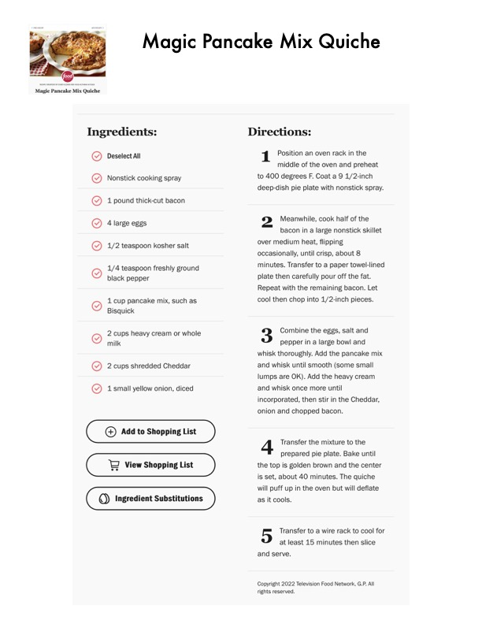

Magic Pancake Mix Quiche

Original cookbook page 386
Ingredients
- Deselect All Position an oven rack it
- middle of the oven and
- Nonstick cooking spray to 400 degrees F. Coat a 9 1,
- deep-dish pie plate with nons
- 1 pound thick-cut bacon
- Meanwhile, cook half
- bacon in a large nonst
- over medium heat, flipping
- occasionally, until crisp, abou
- minutes. Transfer to a paper 1
- 4 large eggs
- 1/2 teaspoon kosher salt
- 1/4 teaspoon freshly ground
- OOO O
- black pepper plate then carefully pour off t
- Repeat with the remaining ba
- Bisquick
- 2 cups heavy cream or whole Combine the eggs, sal
- milk pepper in a large bowl
- whisk thoroughly. Add the par
- Q 2 cups shredded Cheddar and whisk until smooth (som:
- lumps are OK). Add the heavy
- eo 1-small yellow onion, diced and whisk once more until
- incorporated, then stir in the
- onion and chopped bacon.
- @) Add to Shopping List
- Transfer the mixture tc
- prepared pie plate. Ba
- 'View Shopping List the top is golden brown and t
- is set, about 40 minutes. The
- will puff up in the oven but wi
- Transfer to a wire rack
- at least 15 minutes th
- and serve.
- Copyright 2022 Television Food Networ
- rights reserved.
Instructions
- cup pancake mix, such as cool then chop into 1/2-inch whisk thoroughly. Add the par Transfer the mixture tc Transfer to a wire rack
Recipe #386 from collection